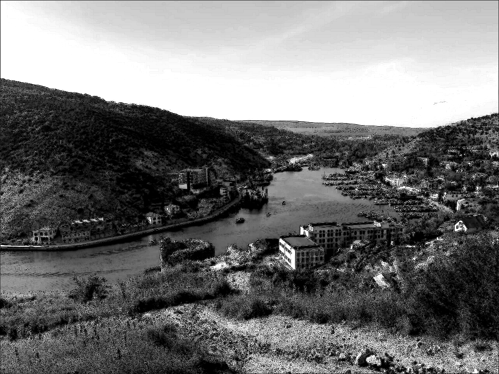

Сборник «Избранное»
Балаклава

Среди хребтов, что горы вЫсят,
Изжаренных от солнца скал...
Причудны формы, что зависят
От прихоти того, кто всё создал!
Изжаренных от солнца скал...
Причудны формы, что зависят
От прихоти того, кто всё создал!